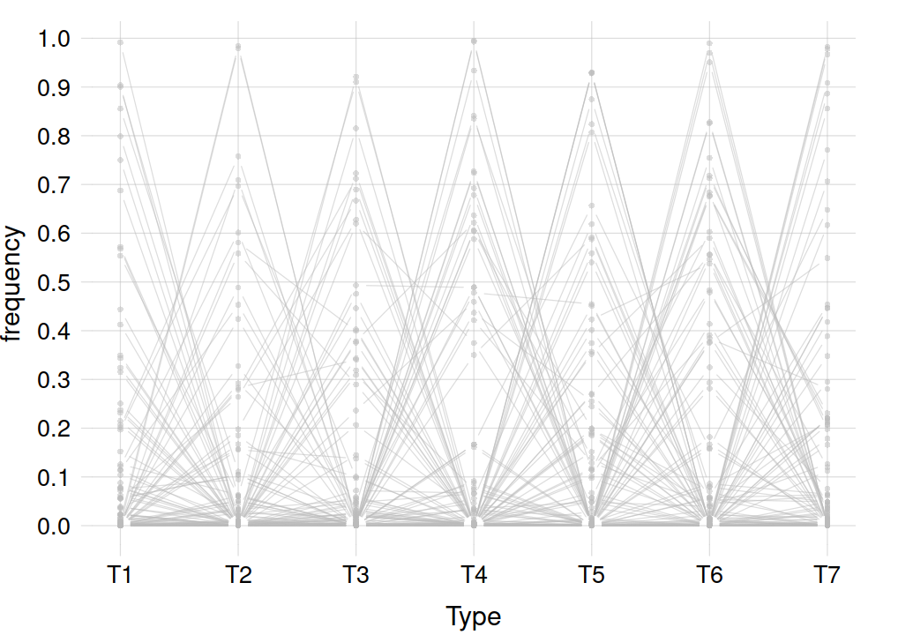
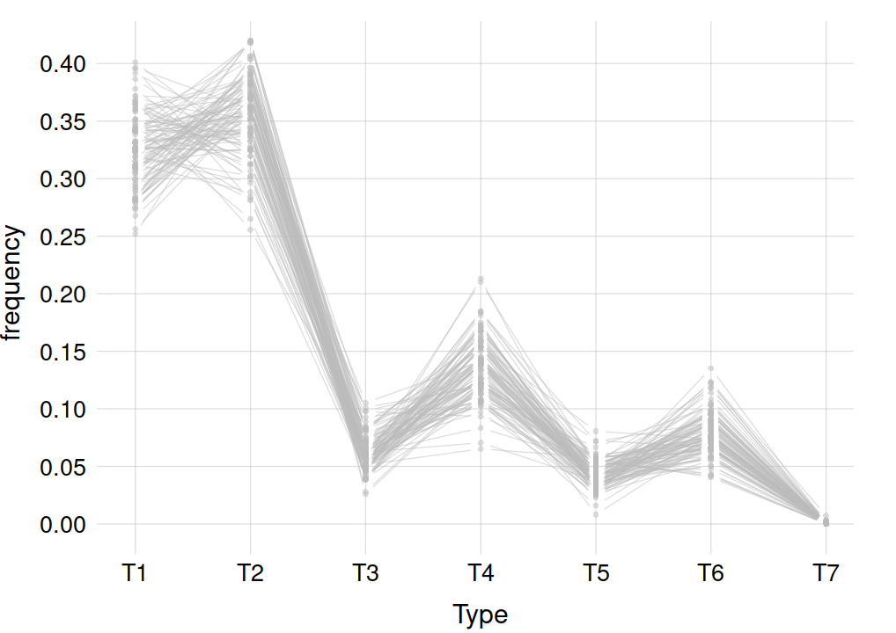
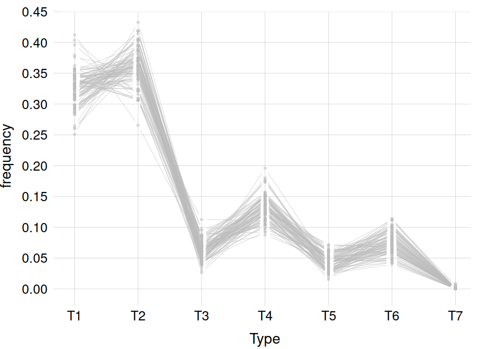

source('code/universal_exch-inference_machine.R')23 The universal exchangeable-inference machine in action
\[ \DeclarePairedDelimiters{\set}{\{}{\}} \]
First let’s load some libraries and functions that we shall use in this example:
1 Example population and data
Consider the following population, which we consider to be exchangeable:
Units: glass fragments collected at particularly defined crime scenes.
Variates:
- \(\mathit{RI}\), ordinal, domain \(\set{1,\dotsc,5}\): Refractive Index of the fragment
- \(\mathit{Na}\), ordinal, domain \(\set{1,\dotsc,5}\): Natrium content of the fragment
- \(\mathit{Mg}\), ordinal, domain \(\set{1,\dotsc,5}\): Magnesium content of the fragment
- \(\mathit{Al}\), ordinal, domain \(\set{1,\dotsc,5}\): Aluminium content of the fragment
- \(\mathit{Si}\), ordinal, domain \(\set{1,\dotsc,5}\): Silicon content of the fragment
- \(\mathit{K}\), ordinal, domain \(\set{1,\dotsc,5}\): Potassium content of the fragment
- \(\mathit{Ca}\), ordinal, domain \(\set{1,\dotsc,5}\): Calcium content of the fragment
- \(\mathit{Ba}\), ordinal, domain \(\set{1,\dotsc,5}\): Barium content of the fragment
- \(\mathit{Fe}\), ordinal, domain \(\set{1,\dotsc,5}\): Iron content of the fragment
- \(\mathit{Type}\), nominal, domain \(\set{\texttt{\small T1},\dots,\texttt{\small T7}}\): Type or origin of the glass fragment
The values for the \(\mathit{RI}\) and content variates represent ranges of numeric values or percentages, which you can find in this metadata file. In the same file you also find the description of the glass types.
We have a sample of 214 units from this population; their variate values are stored in this data file. Here are the first five units:
print(head(fread('datasets/glass_data-5_lev.csv'), 5)) Id RI Na Mg Al Si K Ca Ba Fe Type
1: 1 2 2 5 3 3 1 2 1 1 T2
2: 2 2 2 4 3 3 1 2 1 1 T2
3: 3 3 3 5 2 2 1 2 1 1 T1
4: 4 2 3 2 3 3 1 2 2 1 T4
5: 5 2 2 4 2 3 1 2 1 1 T1
Now we imagine to prepare an agent for drawing inferences about the full population of glass fragments – which also means fragments from future or unsolved crime scenes. The agent uses – or is the embodiment of – the universal exchangeable-inference machine.
2 The agent’s initial state of knowledge
Load the machine’s apparatus
The call
source('code/universal_exch-inference_machine.R')at the beginning of this chapter loaded several R functions that implement the universal machine: they draw inferences, calculate marginal and conditional probabilities, and plot probability distributions.
Learning the background information
Our agent at the moment doesn’t know anything at all, not even about the existence of the population above. If we were to ask it anything, we would just get a blank stare back.
Let us give it the basic background information about the population: the variates’ names and domains. We do this through the function finfo(): it has a data argument, which we omit for the moment, and a metadata argument. The latter can simply be the name of the file containing the metadata (NB: this file must have a specific format):
priorknowledge <- finfo(metadata='datasets/glass_metadata-5_lev.csv')The agent now possesses this basic background knowlege, encoded in the priorknowledge object. The encoding uses a particular mathematical representation which, however, is of no interest to us1. Other representations could also be used, but the knowledge would be the same. Think of this as encoding an image into a png or other lossless format: the representation of the image would be different, but the image would be the same.
1 If you’re curious you can have a glimpse at it with the command str(priorknowledge), which displays structural information about an object.
Preliminary inferences about the population
Now the agent knows about the population, variates, and domains. But it has not seen any data, that is, the variate values for some units. Yet we can ask it some questions and to draw some inferences. Remember that the answer to a question is not just a value: it is the collection of all possible values, with a probability assigned to each. If the actual value is known, then it will have probability 1, and all others probability 0.
Let’s ask the agent: what is the marginal frequency distribution for the variate \(\mathit{Type}\), in the full (infinite!) population? Obviously the agent doesn’t know what the actual distribution is, nor do we. It will calculate a probability distribution over all possible marginal frequency distributions.
This probability distribution for the \(\mathit{Type}\) variate is calculated by the function fmarginal(). It has arguments finfo: the agent’s information; and variates: the names of the variates of which we want the marginal frequencies:
priorknowledge_type <- fmarginal(finfo=priorknowledge, variates='Type')The answer is stored in the object priorknowledge_type, which now contains only information pertinent to the \(\mathit{Type}\) variate.
We would like to visualize this probability distribution over marginal frequency distributions. A complication is that we would need infinite dimensions to visualize this faithfully. One approximate way to represent this probability distribution is by showing, say, 100 representative samples from it. The idea is the same as for a scatter plot (§ 11.5). In this case we would then have 100 different frequency distributions for the variate \(\mathit{Type}\).
The function plotsamples1D() does this kind of visual representation. It has arguments finfo: the object encoding the probability distribution; n (default 100): the number of samples to show; and predict, which for the moment we set to FALSE and discuss in a moment.
How do you think this probability distribution will look like? what kind of marginal frequencies we do expect in the full population?
plotsamples1D(finfo=priorknowledge_type, n=100, predict=FALSE)
You see that anything goes: Some frequency distributions give frequency almost 1 to a specific value, and almost 0 to the others. Other frequency distributions spread out the frequencies more evenly, with some peaks here or there.
This is a meaningful answer, because the agent hasn’t seen any data. From its point of view, everything is possible in this population.
@@ TODO: add representation as quantiles
Preliminary inferences about units
Up to now the agent has drawn an inference regarding the full population, not regarding any specific unit. Now let’s ask it: what will be the value of the \(\mathit{Type}\) variate in the next unit, or glass fragment, we observe? As usual, an answer consists in a probability distribution over all possible values.
The agent’s answer this time is a probability distribution over seven values, which we can draw faithfully. The function plotsamples1D() can draw this probability as well, if we give the argument predict=TRUE (default):
plotsamples1D(finfo=priorknowledge_type)
This plot shows the probability distribution for the next unit in blue, together with a sample of 100 possible frequency distributions for the \(\mathit{Type}\) variate over the full population. Note that samples are drawn anew every time, so they can look somewhat differently from time to time.2
2 To have reproducible plots, use set.seed(314) (or any integer you like) before calling the plot function.
The agent’s answer is that in the next unit we can observe any \(\mathit{Type}\) value with equal probability. Do you think this is a reasonable answer?
The plot above and the information it represents are very useful for inference purposes: not only they give the probability for the next observation, but also an idea of how such a probability could change in the future, as more data are collected and knowledge of the population’s frequency distribution becomes more precise.
3 The agent learns from data
Learning from the sample data
Now let’s give the agent the data from the sample of 214 glass fragments. This is done again with the finfo() function, but providing the data argument, which can be the name of the data file:
postknowledge <- finfo(data='datasets/glass_data-5_lev.csv', metadata='datasets/glass_metadata-5_lev.csv')The postknowledge object contains the agent’s knowledge from the metadata and the sample data. This object can be used in the same way as the object representing the agent’s background knowledge.
Inferences about the population
Now that the agent has learned from the data, we can ask it again what is the marginal frequency distribution for the variate \(\mathit{Type}\), in the full population.
We calculate the probability for the possible marginal frequency distributions, and then plot it as a set of 100 representative samples:
postknowledge_type <- fmarginal(finfo=postknowledge, variates='Type')
plotsamples1D(finfo=postknowledge_type, predict=FALSE)
This plot shows two important aspects of this probability distribution and of the agent’s current state of knowledge:
Not anything goes anymore. Some frequency distributions are clearly “excluded”, or more precisely they are extremely improbable. The most probable frequency distributions have a maximum at the \(\texttt{\small T2}\) value, another lower peak for the value \(\texttt{\small T4}\), and several other qualitative features that can be glimpsed from the plot.
Yet, the agent still has a degree of uncertainty, qualitatively shown by the width of the “bands” of frequency distributions. For example, the frequency for the \(\texttt{\small T2}\) value could be \(0.40\) as well as \(0.30\)
And there are other more specific aspects that can be found by visual inspection. For instance:
Some frequency distributions have their absolute maximum at \(\texttt{\small T1}\), and a lower frequency at \(\texttt{\small T2}\). Others have their absolute maximum at \(\texttt{\small T2}\) and a lower value at \(\texttt{\small T1}\). So there’s still uncertainty as to which value is the most frequent in the full population.
The agent gives a very small but non-zero frequency to the value \(\texttt{\small T7}\). Yet, the data have no units at all with the \(\texttt{\small T7}\) value. Even if the agent has never seen this value in the data it was given, it knows nevertheless, from the metadata, that this is a possible value. So the agent doesn’t dogmatically say that its frequency in the full population should be zero (as in the sample); only that it should be extremely low.
Inferences about units
Finally we ask the agent what \(\mathit{Type}\) value we should observe in the next glass fragment. The probability distribution answering this question is plotted by the same function with the argument predict=TRUE (default), as before:
plotsamples1D(finfo=postknowledge_type)
4 Conditional, “discriminative” or “supervised-learning” inferences
The inferences about a new units that the agent has made so far were of an “unsupervised-learning” or “generative” kind ([§ sec-2nd-connection-ML]): the agent did not receive or use any partial information about a new unit. Let’s now try a “supervised-learning” or “generative” kind of inference.
Imagine that we are at a new crime scene, a glass fragment is recovered, and tests are made about its refractive index and chemical composition. The following values are found, referred to the levels of our variates:
newfragment <- c(RI=2, Na=2, Mg=4, Al=3, Si=3, K=1, Ca=2, Ba=1, Fe=1)The detectives would like to know what’s the possible origin of this fragment, that is, its \(\mathit{Type}\). Our agent can draw this inference.
First, the agent can calculate the probability distribution over the conditional frequencies (§ 17.2) of the \(\mathit{Type}\) values for the subpopulation (§ 17.1) of units having the specific variate values above. This calculation is done with the function fconditional(), with arguments finfo: the agent’s current knowledge, and unitdata: the partial data obtained from the unit.
condknowledge <- fconditional(finfo=postknowledge, unitdata=newfragment)
condknowledge_type <- fmarginal(finfo=condknowledge, variates='Type')The condknowledge object contains the agent’s knowledge conditional on the variates given; this knowledge is about the remaining variates, which in this case are the single variate \(\mathit{Type}\) (so the fmarginal() calculation is actually redundant in this case).
Second, the agent can calculate the probability distribution for the \(\mathit{Type}\) values of this particular glass fragment, given the above information.
Both inferences can be visualized in the usual way:
plotsamples1D(finfo=condknowledge_type)
The agent thus gives a probability around \(87.5\%\) to the fragment’s being of \(\texttt{\small T2}\) type, and around \(7.5\%\) each of being \(\texttt{\small T1}\) or \(\texttt{\small T6}\) type. It also shows that further training data could change these probabilities by around \(\pm 2.5\%\).
Should the crime investigation proceed on the assumption that the fragment is of \(\texttt{\small T2}\) type? No, not necessarily. The best decision depends on the gains and costs involved in making correct or wrong assumptions. To this last decision-making problem we turn next.